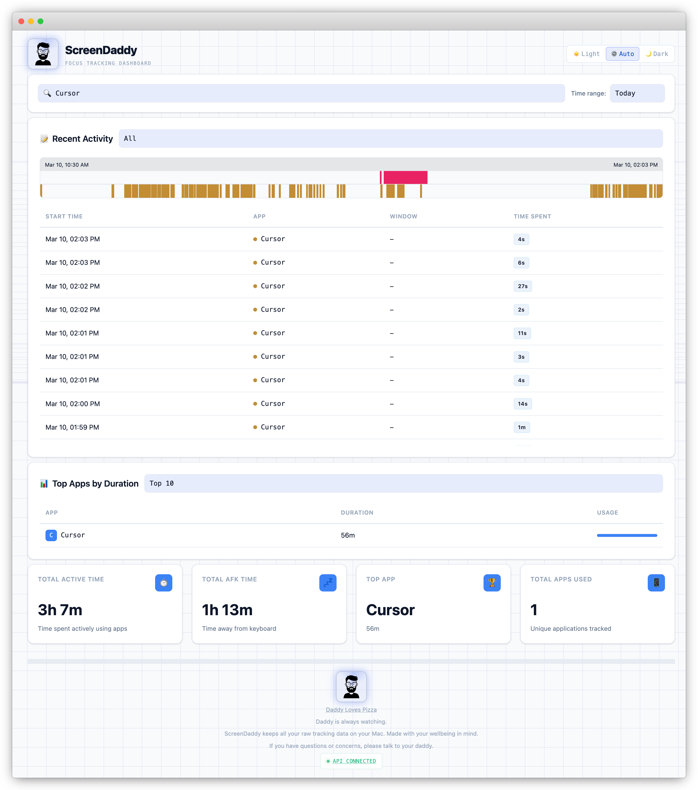

ScreenDaddy
Simple window title & time tracking for macOS.
ScreenDaddy sits quietly in your menu bar and tracks which app and window has your attention, when you go AFK, and when you start a focus timer — then renders it all in a fast, local dashboard. No browser extension, no cloud account, no analytics: just an honest picture of how you spend time on your Mac, all on your machine, all yours.
Features
Active window tracking
Records which app and window is in focus. Event-driven (no heavy polling) so it stays light.
AFK detection
Detects when you’re away. Idle > 5 minutes is logged as AFK; tracking resumes when you’re back.
Focus timer
Built-in timer from the menu bar. Track focused sessions without leaving the app. Timer ends in a beautiful window with a random inspirational quote.
Privacy-first
Data stays on your Mac. No telemetry, no cloud.
Menu bar only
Runs from the menu bar — no Dock icon. Open dashboard, timer, and settings from one place.
Ideal for young adults
Setting a mandatory daddy password allows you to restrict quitting and uninstalling ScreenDaddy.
Local dashboard
ScreenDaddy exposes a dashboard over the local network. View totals, top apps, and recent events.
Local AI Model Analysis
If you have a local AI model running, ScreenDaddy can send a predefined prompt with your recent activity data for analysis.
Local API
Access the local API and build your own UI layer any way you like. Privacy-first, your data, your device, your time. data for analysis.
Setup Instructions
Screenshots

Releases
| Date | Changelog | Version |
|---|---|---|
| March 12, 2026 |
|
Download v1.0.0 |